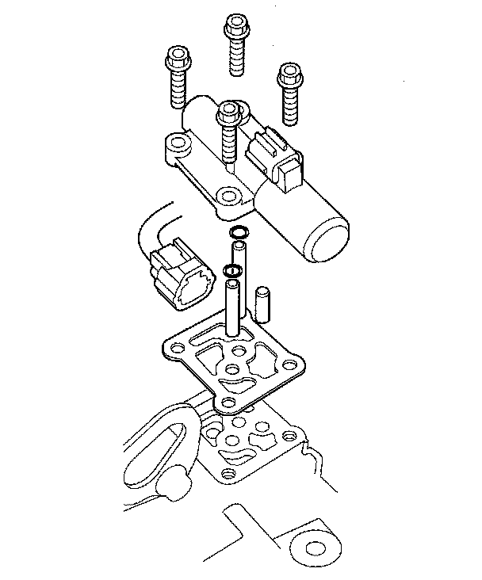

A/T Clutch Pressure Control Solenoid Valve C Test
A/T Clutch Pressure Control Solenoid Valve C Test1. Connect the HDS to the DLC (A).
2. Choose Clutch Pressure Control (Linear) Solenoid C in the Miscellaneous Test Menu on the HDS.
NOTE: If the HDS does not communicate with the PCM, troubleshoot the DLC circuit.
3. Test A/T clutch pressure control solenoid valve C with the HDS.
^ If the valve tests OK, the test is complete. Disconnect the HDS.
^ If the valve does not test OK, follow the instructions on the HDS.
^ If the valve does not test OK, and the HDS does not determine the cause, go to step 4.
4. Make sure you have the anti-theft codes for the audio system and the navigation system (if equipped).
5. Disconnect the negative terminal from the battery, then disconnect the positive terminal.
6. Remove the battery hold-down bracket, and remove the battery cover, battery, and battery tray.
7. Remove the under-hood subfuse box from its bracket, and remove the bracket from the battery base.
8. Remove the intake air duct and air cleaner housing.
9. Remove the battery base and battery base bracket.
10. Disconnect the A/T clutch pressure control solenoid valve C connector.
11. Measure A/T clutch pressure control solenoid valve C resistance at the connector terminals.
Standard: 3-10 Ohms
^ If the resistance is out of standard, replace A/T clutch pressure control solenoid valve C.
^ If the resistance is within the standard, go to step 12.
12. Connect a jumper wire from the negative battery terminal to the solenoid valve C connector terminal No. 2, and connect another jumper wire from the positive battery terminal to the connector terminal No. 1.
^ If a clicking sound is heard, the valve is OK. Reconnect the connector, and install all removed parts.
^ If no clicking sound is heard, go to step 13.
13. Remove A/T clutch pressure control solenoid valve C.

14. Remove the ATF joint pipes, O-rings, ATF pipe, and gasket.
15. Check the fluid passage of the solenoid valve for contamination.
16. Connect a jumper wire from the negative battery terminal to A/T clutch pressure control solenoid valve C connector terminal No. 2, and connect another jumper wire from the positive battery terminal to the connector terminal No. 1. Make sure A/T clutch pressure control solenoid valve C moves.
17. Disconnect one of the jumper wires and check valve movement at the fluid passage in valve body mounting surface. If the valve binds or moves sluggishly, or if the solenoid valve does not operate, replace A/T clutch pressure control solenoid valve C.
18. Clean the mounting surface and fluid passage of the solenoid valve body and transmission housing.
19. Install the 8 x 53 mm ATF joint pipe (A) with the filter end into its mounting hole (B).
20. Check the height (A) of the 8 x 53 mm ATF joint pipe (B) between the top (C) of the pipe and solenoid valve body mounting surface (D). The height is about 7 mm (0.3 in.) If the height is over 7 mm (0.3 in.) push the pipe until it bottoms in the accumulator body.

21. Install the new gasket (A) on the transmission housing, and install the 8 x 34.5 mm ATF joint pipe (B) with the filter end into the transmission housing and 8 x 25.2 mm ATF pipe (D).
22. Install the new O-rings (E) over the ATF joint pipes.
23. Install A/T clutch pressure control solenoid valve C.
24. Check the connector for rust, dirt, or oil, then connect the connector securely.
25. Install the battery base bracket and battery base.
26. Install the air cleaner housing and intake air duct.
27. Install the under-hood subfuse box on the battery base, and install the subfuse box on its bracket.
28. Install the battery tray, battery, battery cover, and battery hold-down bracket, then connect battery terminals.
29. Enter the anti-theft codes for the audio system and the navigation system (if equipped). Set the clock.
30. Do the steering column position memorization.
31. Do the power window control unit reset procedure.